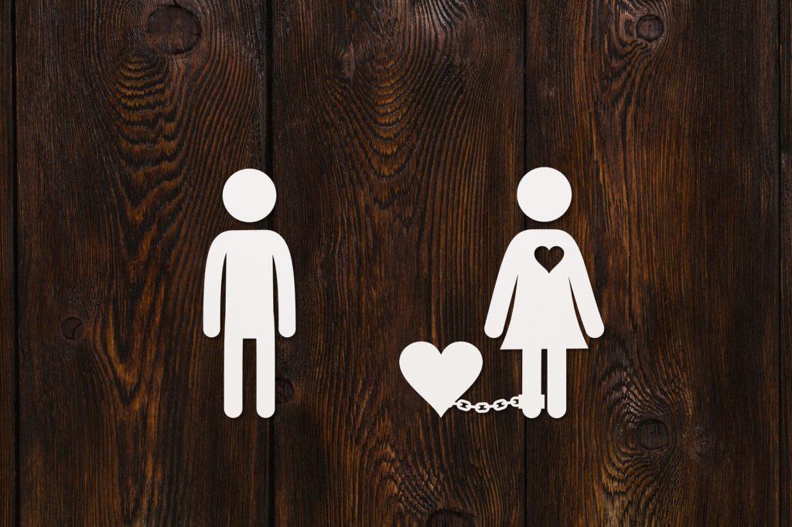

Dependencia emocional
Neste site iremos falar sobre dependencia emocional, dependencia emocional é um sentimentento onde você se vê dependente
de algo ou alguem especifico, geralmente você se torna dependente em algum relacionamento, o que é ruim, pois você depende
de uma pessoa para conseguir tomar algum tipo de decisão , seja minima como escolher uma roupa, ou até escolher o que fazer
Duvidas frequentes
-
O que causa a dependencia emocional?
Como reconhecer a dependencia emocional?
Como se livrar da dependencia emocional?
´o que eu sinto é amor, ou dependencia?`
O que causa a dependencia emocional?
A dependência emocional geralmente se desenvolve devido a uma combinação de fatores, incluindo experiências da infância,
baixa autoestima, medo de abandono e padrões de relacionamento disfuncionais. A falta de segurança e apoio emocional durante
a infância, especialmente em relação aos pais ou cuidadores, pode levar à busca por validação e segurança em outras pessoas
na vida adulta.
Como reconhecer a dependencia emocional?
A dependência emocional se manifesta pela necessidade excessiva de validação, aprovação e atenção de outra pessoa,
frequentemente em detrimento da própria felicidade e bem-estar. Pessoas com dependência emocional tendem a ter baixa
autoestima, medo do abandono, dificuldade em tomar decisões e uma tendência a idealizar o parceiro.